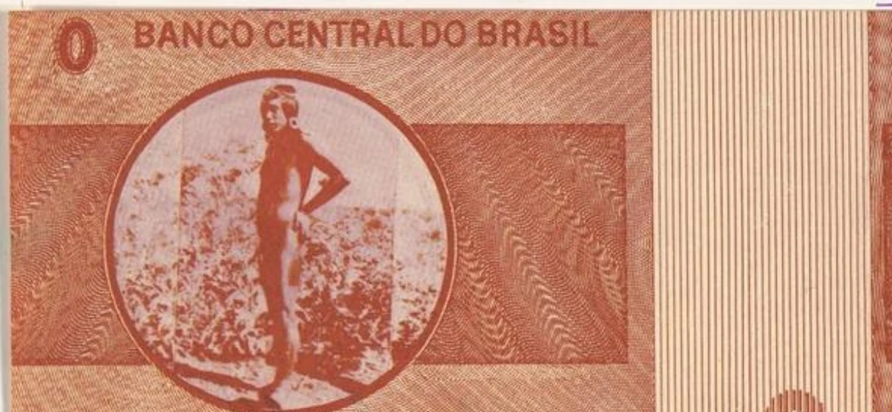
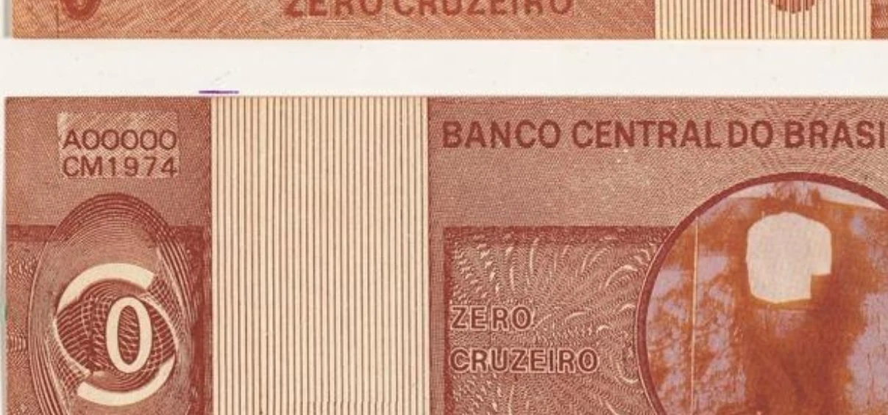
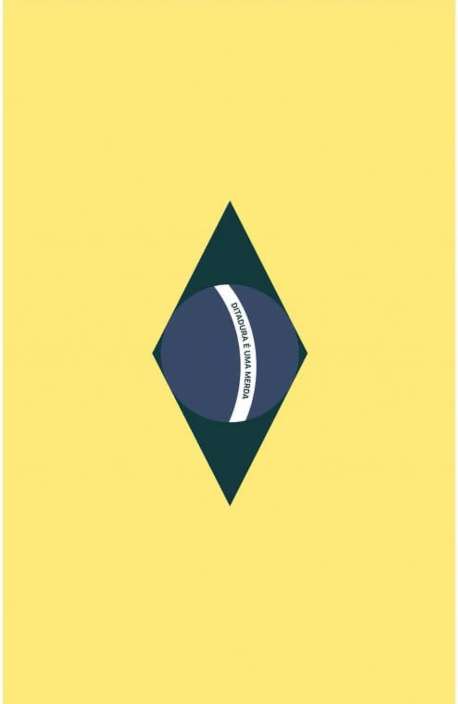
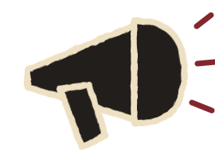

O BRASIL
EM DISPUTA*
Um país. Muitas vozes.
Há respostas que não estão nesta tela. Explore a parede real, descubra palavras escondidas e abra uma história de cada vez.




COMO
FUNCIONA?
O site faz a pergunta. A parede esconde a resposta. Para avançar, você vai precisar interagir com os elementos físicos da exposição.
OLHE AO REDOR.
Leia a missão do site e procure a peça indicada na parede.
MEXA NA PAREDE.
Puxe um cordão, abra um jornal, gire a rádio ou vire um recorte.
REVELE A RESPOSTA.
Digite a palavra encontrada e desbloqueie a próxima etapa.
DESVENDE
A PAREDE.
Uma pergunta por vez. A próxima só aparece quando você encontra a palavra certa.
NACIONALISMO
OU UFANISMO?
O que significa amar um país?
O Modernismo brasileiro buscou novas maneiras de representar o Brasil. Suas correntes tinham visões diferentes sobre identidade nacional, cultura e pertencimento.
O ufanismo exacerbado transforma a exaltação nacional em uma visão que pode impedir críticas e tratar as diferenças como ameaças. Debater o país é também reconhecer suas contradições.
LEIA. QUESTIONE. CONVERSE.“A crítica também pode ser uma forma de cuidado com o país.”
Frase autoral deste trabalho escolar.